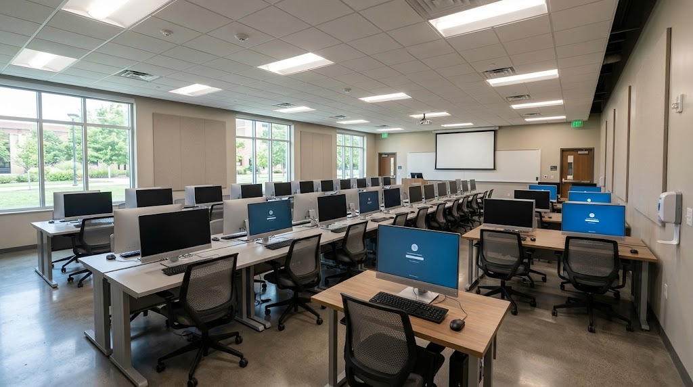

Biblioteca Central
O ambiente ideal para estudo silencioso e acesso a milhares de livros e artigos académicos.

O Conecta Campus tem como finalidade guiar alunos, professores e visitantes, facilitando o acesso à informação sobre os principais espaços e serviços disponíveis no nosso polo universitário.
O ambiente ideal para estudo silencioso e acesso a milhares de livros e artigos académicos.
Equipado com computadores de última geração para o desenvolvimento das aulas práticas do curso de ADS.

Oferece refeições balanceadas e acessíveis diárias, sendo o principal ponto de encontro e alimentação para a comunidade acadêmica.